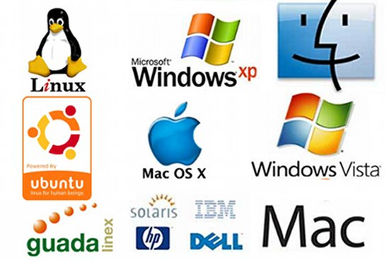

Arquitectura de las computadoras
en esta asignatura se muestran las partes de una computadora
asi como su funcionamiento.
{kind=link}
CARRERA DE INFORMATICA
en esta asignatura se muestran las partes de una computadora
asi como su funcionamiento.
La materia de bases de datos es fundamental en la
formación de los ingenieros técnicos en informática de gestión
Esta asignatura muestra inicialmente la red Internet y todo el conjunto de funciones
servicios y protocolos de su arquitectura de comunicaciones
TCP/IP para paulatinamente ir a protocolos.
El objetivo fundamental de la asignatura es presentar al alumno la estructura
de un Sistema Operativo moderno, detallando cada una de
las partes que lo componen, las relaciones entre las mismas
ofrece una propuesta completa que permite a las organizaciones alcanzar sus objetivos más
ambiciosos en materia de Inteligencia de Negocios ayudando a su organización a soportar la toma d
e decisiones y a tener un mejor control de sus procesos.
Esta asignatura es posterior a las materias que se encuentran definidas en programación e
ingeniería y tratamiento de la información ya que éstas permiten definir el desarrollo de
soluciones para dispositivos móviles.
es un fenómeno estrechamente ligado al desarrollo de internet y que consiste en elalmacenamiento
de grandes cantidades de datos fuera del ordenador, en servidores externos
Cisco es una cartera de infraestructura de routing y switching
física y virtual, fija e inalámbrica que es abierta y programable.
{kind=link}
{kind=link}
{kind=link}
{kind=link}
{kind=link}
{kind=link}
{kind=link}